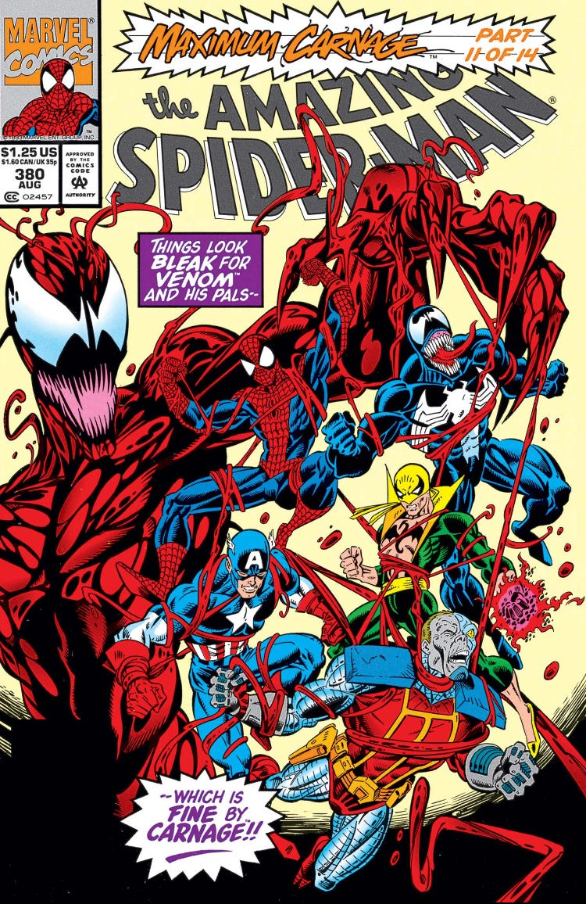
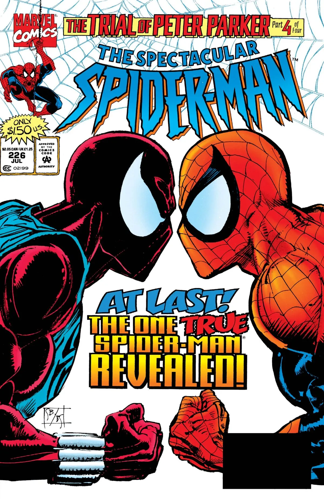
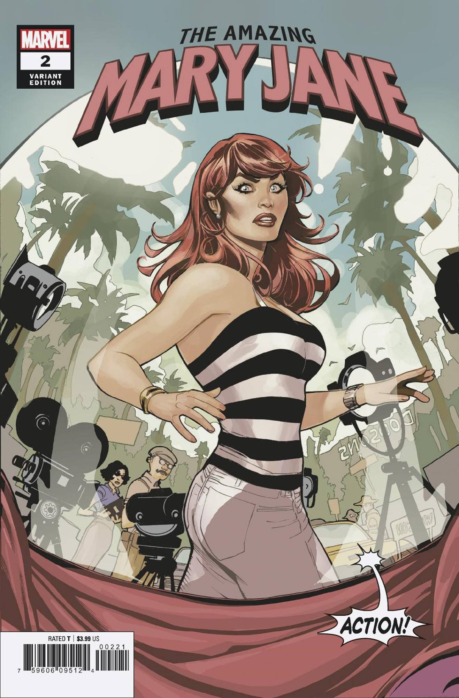
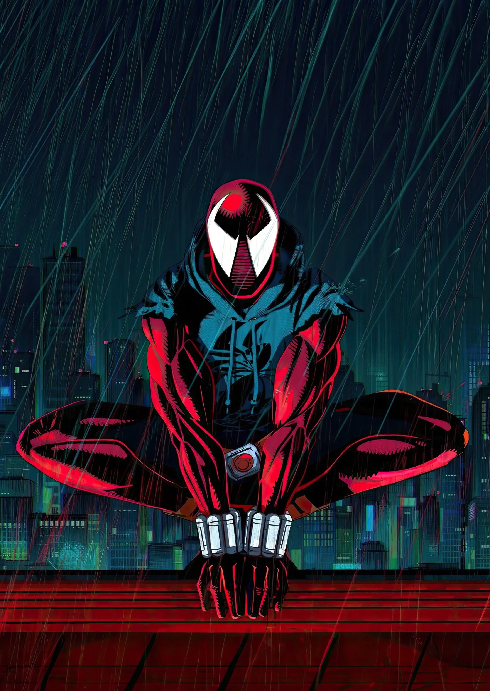
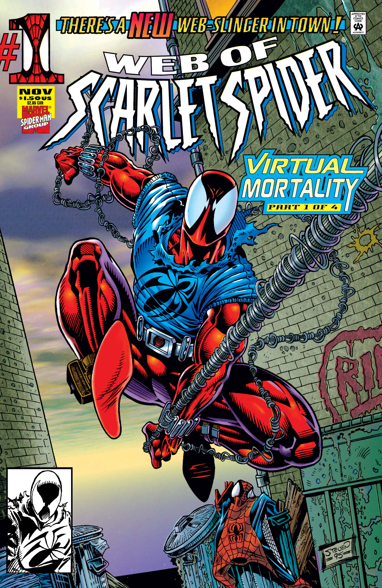
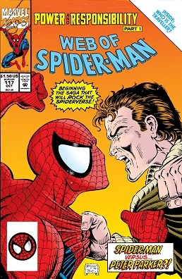
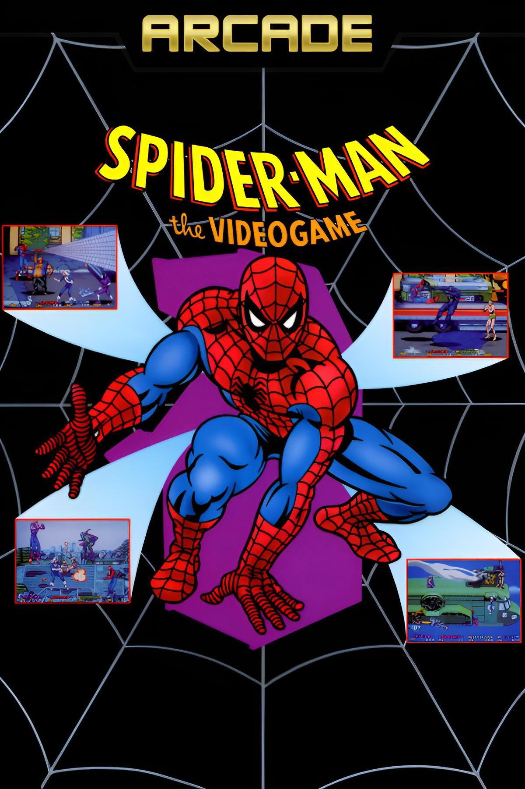

The 1990s were one of the most explosive decades in Spider-Man’s history—defined by the rise of Venom
and Carnage,
massive crossover events, identity crises, and a surge of multimedia storytelling. From the
groundbreaking
Spider-Man: The Animated Series to controversial storylines like the Clone Saga, the 90s pushed
Spider-Man into
darker themes, bigger stakes, and some of the franchise’s most iconic moments.
ToneDarker, identity-driven, symbiote-focused
New IconsCarnage, Ben Reilly, Spider-Man 2099
CrossoversMaximum Carnage, Clone Saga, Planet of the Symbiotes
Media Boom1994 Animated Series, Spider-Man Unlimited
Milestones
The 1990s pushed Spider-Man into darker storytelling, explosive symbiote conflicts, and massive
crossover events that reshaped Peter Parker’s world. From Carnage’s debut and the rise of Ben Reilly
to the era-defining animated series, these are the stories and character shifts that defined
Spider-Man
for a new generation.
Animated series
Spider-Man: The Animated Series (1994)
A landmark Fox Kids series that adapted classic storylines like the symbiote saga, Secret
Wars, the Clone Saga,
and introduced Venom, Carnage, and countless villains to mainstream audiences.

Major crossover
Maximum Carnage (1993)
Carnage returns with a murderous crew, forcing Spider-Man to team with Venom, Black Cat,
Cloak & Dagger, and others
to stop one of Marvel’s darkest villains.
Villain debut
ASM #361 (1992) – First Carnage
Cletus Kasady bonds with an offspring of the Venom symbiote, creating Carnage—one of
Spider-Man’s
most brutal and chaotic enemies.

Identity crisis
Clone Saga (1994–1996)
Ben Reilly returns, the Jackal resurfaces, and Spider-Man enters a long-running arc
questioning his
own identity, ultimately leading to Peter stepping aside—temporarily—for Ben.
Future icon
Spider-Man 2099 #1 (1992) – First Miguel O’Hara
Miguel O’Hara becomes the Spider-Man of the year 2099, launching a massively popular
futuristic
reinvention of the franchise and one of Marvel’s strongest 90s creations.
Antihero evolution
Venom: Lethal Protector (1993)
Moving to San Francisco, Venom transitions from villain to antihero, setting the tone for
decades of solo stories and later film adaptations.

Character spotlight
Mary Jane’s Expanded Role (1990s)
As Peter Parker’s wife, Mary Jane becomes a central emotional anchor, navigating fame,
danger, and the strain of Peter's double life.
Animated series
Spider-Man Unlimited (1999)
A futuristic animated series sending Spider-Man to Counter-Earth.
Though brief, it became a cult favorite for its unique suit and sci-fi direction.

New identity
Ben Reilly as the Scarlet Spider (1994)
Peter’s clone Ben Reilly returns to New York and takes on the Scarlet Spider identity,
debuting his now-iconic blue hoodie costume and stepping into the spotlight as a major
player in Spider-Man’s world.

Status-quo shift
Ben Reilly Becomes Spider-Man (1995)
After a long stretch of clone-related revelations, Peter retires to focus on his family
and Ben Reilly officially becomes Spider-Man, taking over the main books and redefining
the mantle for much of the decade.

Mastermind revealed
Return of Norman Osborn (1996)
Thought dead since the 1970s, Norman Osborn is revealed as the hidden mastermind behind
the Clone Saga. His return ends the storyline, restores the original Green Goblin, and
sets up decades of future conflicts.

Gaming boom
Spider-Man in 1990s Video Games
The 1990s saw Spider-Man swing onto consoles and arcades in a big way, from side-scrollers
on the
SNES and Sega Genesis to the landmark Spider-Man (2000) on PlayStation. These games
helped
define how players experienced Spidey’s web-swinging, boss fights, and New York City outside
of the comics.